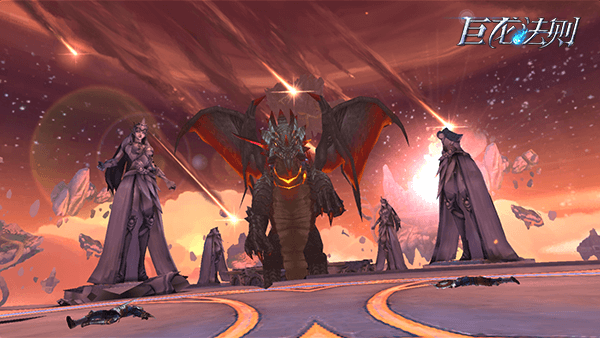
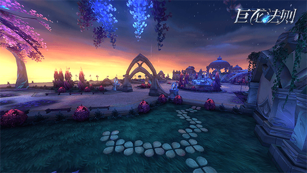

《巨龙法则》是一款魔幻暗黑风格的MMORPG手游，以邪龙提亚马特进攻巴哈姆特，人族、亡灵和巨龙联盟携手抵抗为故事背景，玩家自由选择种族加入，共同对抗提亚马特，捍卫正义，为死去的亲人兄弟报仇。全作以经典暗黑风格为基调，无论是人物造型、场景建筑还是副本风格都给人一种战后荒凉孤寂之感。

《巨龙法则》由自研顶级引擎开发，画面精细，流光酷炫，人物质感超强，表现出了IMAX级的细腻画质，其细节表现力已经达到了手游的顶尖水平。对比同类游戏，《巨龙法则》拥有更富层次感的场景，更加成熟的画面风格，更加细腻的人物动作以及更加有力的细节表达来传递，在玩家享受视觉盛宴的同时，也能流畅操作运行，打击感畅快十足！
